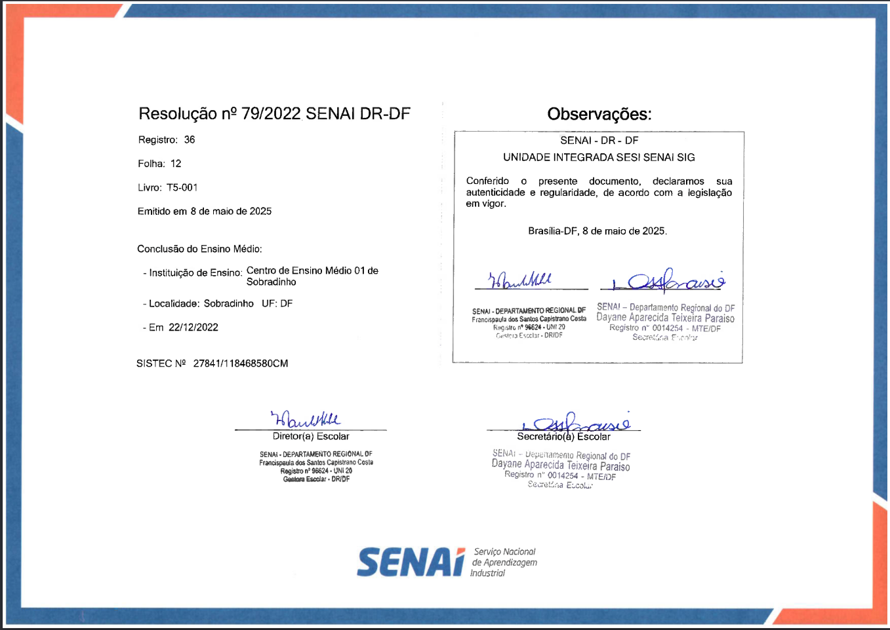
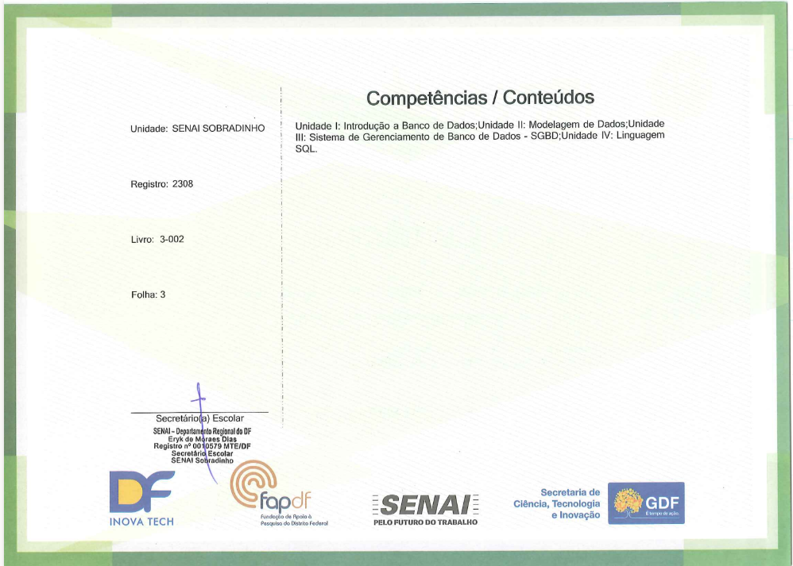
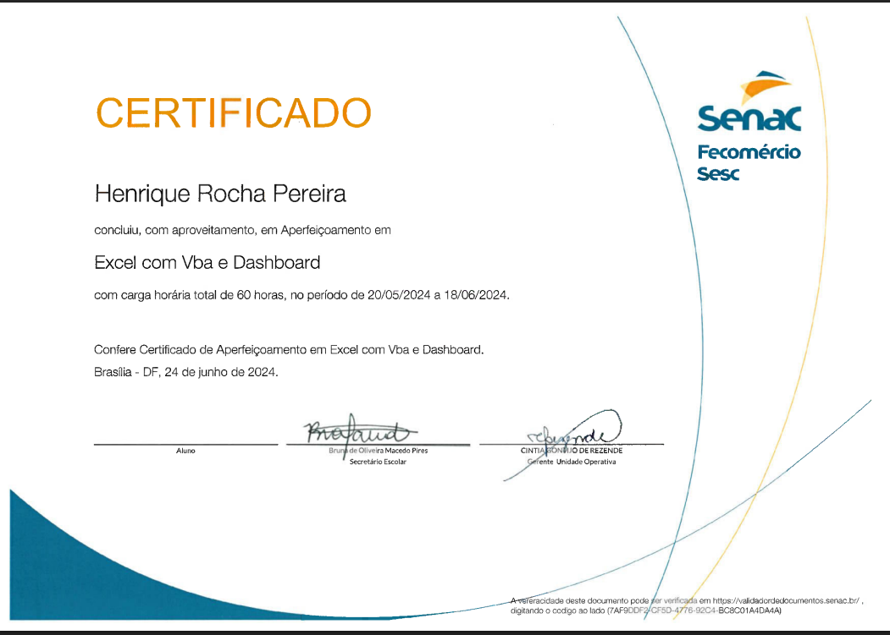
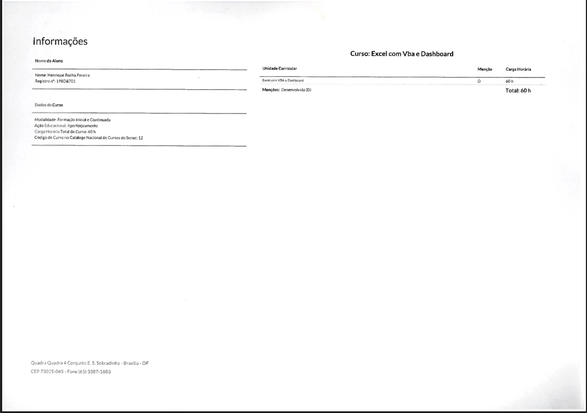

Website Institucional
Desenvolvimento de site institucional para representar uma entidade com design responsivo e navegação intuitiva.
Ver RepositórioTécnico de Informática | Desenvolvimento de Sistemas
“E tudo quanto fizerdes, fazei-o de todo o coração, como ao Senhor...”Estabelecer Conexão
Colossenses 3:23

Desde o início da minha jornada, tenho me dedicado ao universo da tecnologia. Cada projeto é uma oportunidade para aplicar minhas habilidades, transformando desafios em soluções eficazes e inovadoras.
Atuo atualmente como Técnico de TI Voluntário na Secretaria de Saúde de Brasília, oferecendo suporte essencial e contribuindo para uma infraestrutura tecnológica otimizada.
Minha fé cristã é o alicerce que guia meu trabalho, buscando sempre atuar com integridade e propósito, servindo com excelência.
Baixar CurrículoTrabalhar com integridade, excelência e empatia, entregando soluções e resultados que impactam na vida das pessoas.
Atuo como Técnico de TI Voluntário na Secretaria de Saúde de Brasília desde 03/2025, realizando:
Além disso, desenvolvo projetos pessoais com ferramentas como java, spring boot, sql, linux entre outras. Em busca de entender o ecossistema por trás de aplicações.
Desenvolvimento de site institucional para representar uma entidade com design responsivo e navegação intuitiva.
Ver Repositório
Sistema para gerenciamento, edição e exclusão de tarefas, facilitando a organização e produtividade.
Ver Repositório
Site com livros e versículos diários para estudo e reflexão espiritual.
Ver Repositório
Desenvolvimento de Sistemas - SENAI

Administração de Banco de Dados - SENAI


Excel com VBA e Dashboard - SENAC
Este vídeo apresenta o funcionamento do sistema de cardápio digital que desenvolvi utilizando Vite, com foco em performance, usabilidade e design moderno. A demonstração cobre tanto a interface quanto as principais funcionalidades implementadas.
Se você busca um profissional dedicado e com propósito para desenvolver soluções tecnológicas, estou disponível para conversar e colaborar.